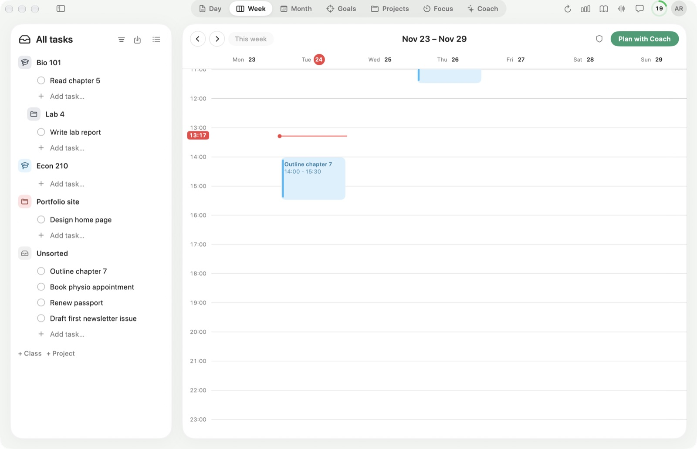
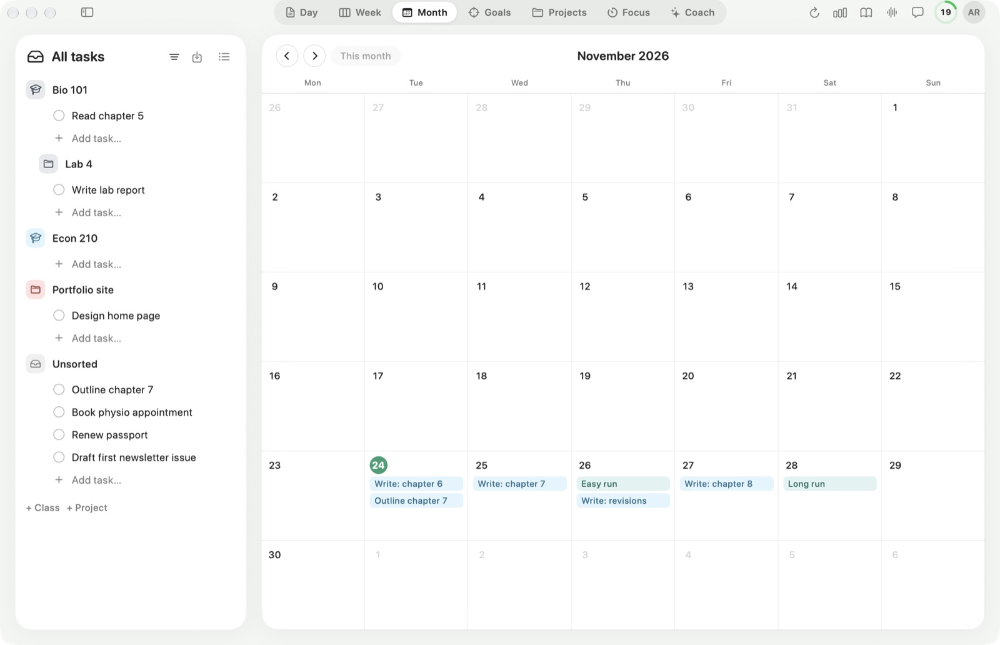
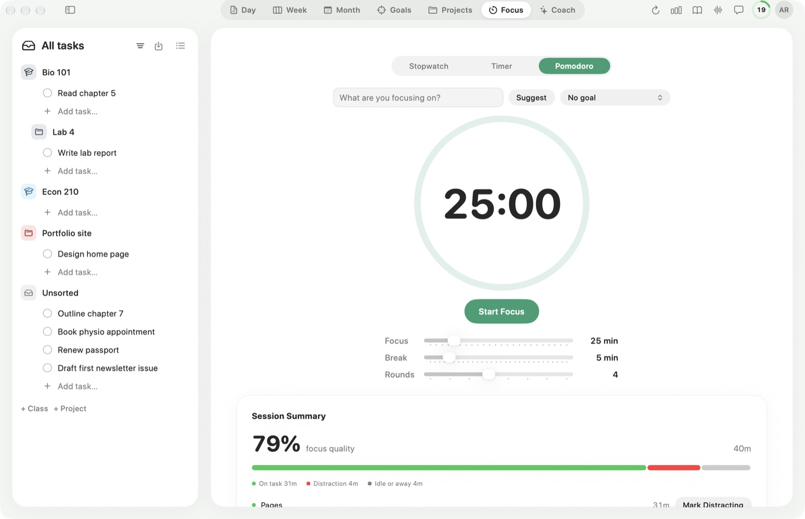
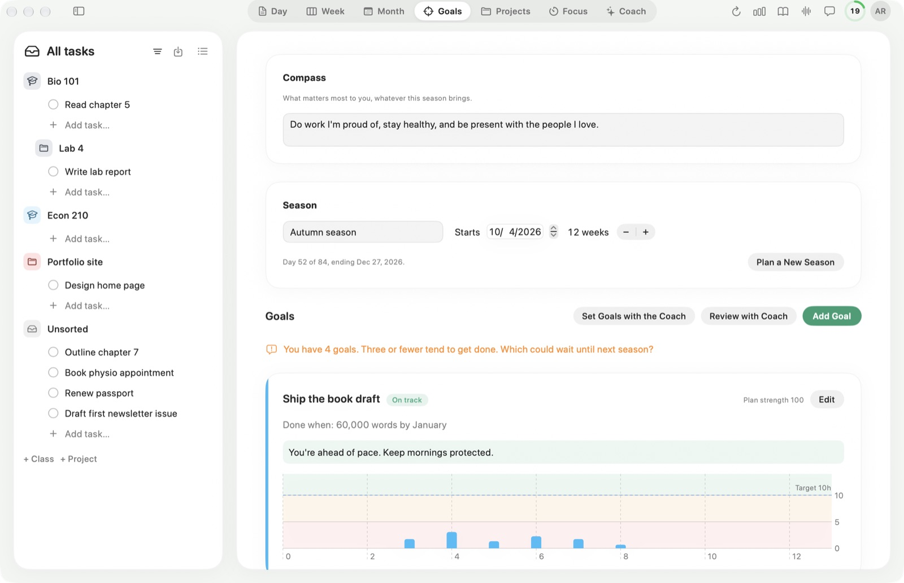
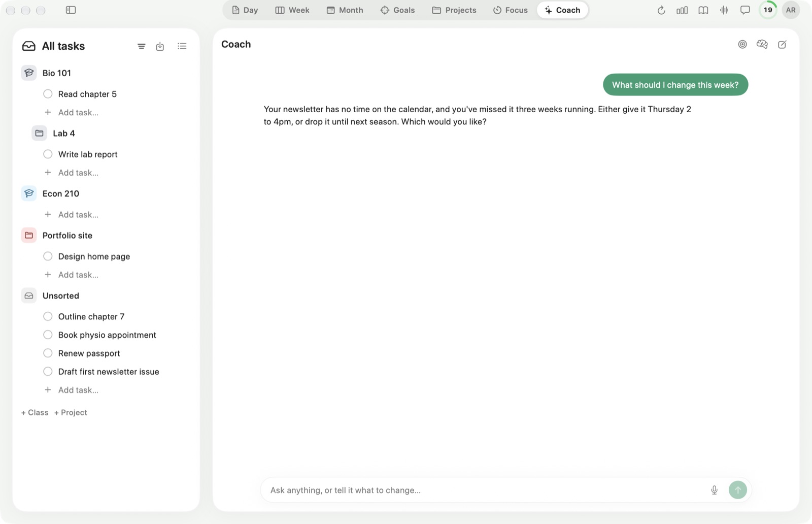
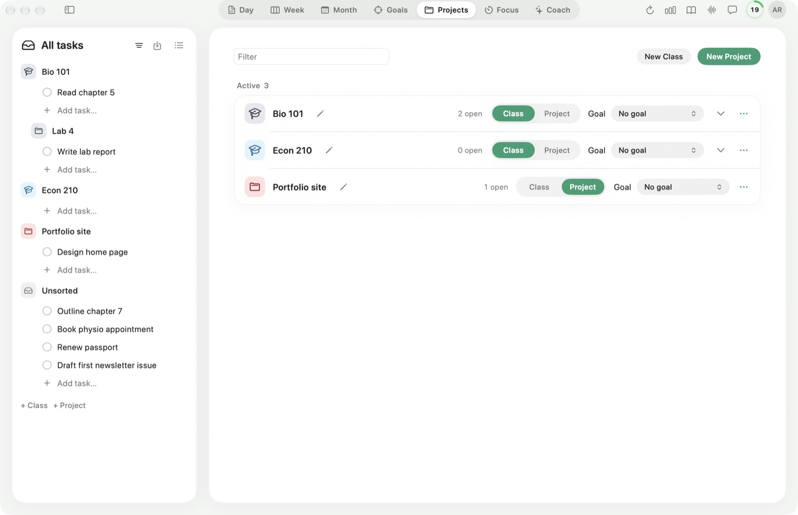
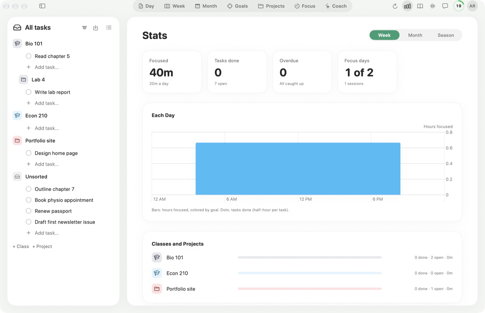

Your day on one screen.
Tasks on the left, your calendar in the middle, progress on the right. Drag a task onto the calendar and it becomes time you've set aside for it.
- Your Google or Apple calendar, two-way
- "Plan with Coach" fills the open gaps in your day for you
- Pull tasks out of your mail and meetings in one click
See the shape of your week.
Zoom out to check you're making room for the things you said mattered, not just the meetings.


Start a session. Stay in it.
Pick a task and press start. Bearing keeps time and scores each session so you learn when you actually do your best work.
- Focus quality for every session, not just minutes
- Tied to your goals so time adds up somewhere
- Start and stop it from the menu bar

Goals with hours, not hopes.
Give each goal a weekly budget of hours. Bearing tracks the time you really put in and tells you which ones are slipping before the week is over.

A coach that's honest with you.
Ask it anything about your week. It reads your calendar, tasks, and focus history, remembers what you've told it, and can move things around for you if you let it.
- Built in and free to use, no API key needed
- Or bring your own: Claude, or a local model through Ollama
- You choose what it can change, and it asks first by default

The rest of your week, sorted.


Classes and projects
Group tasks by class or project, give each a color and icon, and mark what's a priority.
Stats
Where your hours went, how well you focused, and how each goal is trending.
Journal
A short daily note. The coach reads it so it gets to know you over time.
Todoist sync
Keep using Todoist. Tasks, labels, and projects stay in step both ways.
Sync
Sign in with Google and your data follows you to every Mac you use.
Yours
No ads, no tracking inside the app. Use it without an account if you prefer.
Plan your day from Claude.
Bearing has its own MCP server. Connect Claude, ChatGPT, Codex, Gemini, Cursor, Grok, or any MCP client and it can read your schedule, add tasks, block time, and log progress, all within the permissions you set.
Run it locally, or turn on the hosted server to reach it from anywhere. Setup for every app →
claude mcp add --transport http bearing \
https://bearing-planner.vercel.app/api/mcp \
--header "Authorization: Bearer …"Today, one click away.
Check what's next, see your goals, or tick off a task from the menu bar without opening the full app.
Free. Really.
Every feature, the coach included. No trial, no paywall, no card. Just download it and start planning.
Download BearingQuestions
Is it actually free?
Yes. All of it, including the built-in coach. There's nothing to upgrade to.
Do I need an account?
No. You can use Bearing on one Mac without signing in. Sign in with Google if you want sync and the hosted MCP server.
macOS says it can't check the app. What do I do?
Open System Settings, go to Privacy & Security, scroll down, and click Open Anyway next to Bearing. You only need to do this once.
Which Macs does it run on?
Apple silicon Macs on macOS 26 or later.
What does the coach see?
Your calendar, tasks, goals, focus sessions, and journal, only when you ask it something. It can't change anything you haven't allowed, and you can switch to a local model so nothing leaves your Mac.
What is MCP?
The Model Context Protocol, a standard way for AI assistants to use apps. With it, Claude or another agent can work with your Bearing plan directly.